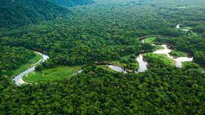
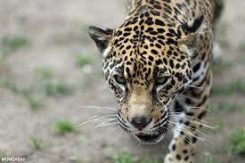
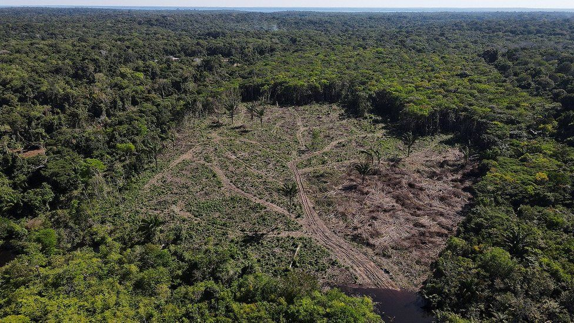

Amazon Rainforest, large tropical rainforest occupying the drainage basin of the Amazon River and its tributaries in northern South America and covering an area of 2,300,000 square miles (6,000,000 square km). Comprising about 40 percent of Brazil’s total area, it is bounded by the Guiana Highlands to the north, the Andes Mountains to the west, the Brazilian central plateau to the south, and the Atlantic Ocean to the east.
The Amazon Rainforest is the world’s richest and most-varied biological reservoir, containing several million species of insects, plants, birds, and other forms of life, many still unrecorded by science. The luxuriant vegetation encompasses a wide variety of trees. Major wildlife includes jaguars, manatees, tapirs, capybaras and other rodents, and several types of monkeys.
Brazilians have settled large portions of the Amazon, clearing the land for lumbering, grazing, and agriculture. Between 1970 and 2016, Brazilian Amazon forest cover declined from some 1,583,000 square miles to about 1,283,000 square miles. However, conservation slowed forest loss to roughly 0.1–0.2 percent per year between 2008 and 2016.
